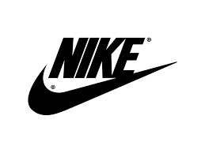

NIKE
O que e a Nike?
A Nike é uma das principais marcas de roupas, calçados e acessórios esportivos do mundo. Fundada em 1964 por Bill Bowerman e Phil Knight, inicialmente sob o nome "Blue Ribbon Sports", a empresa se tornou conhecida como Nike em 1971. Desde então, ela se estabeleceu como uma das marcas mais reconhecidas e influentes no mundo do esporte e da moda.
A Nike é conhecida por sua ampla gama de produtos, que incluem tênis de corrida, basquete, futebol, roupas esportivas e acessórios. Além disso, a marca é famosa por suas colaborações com atletas de renome mundial, equipes esportivas, celebridades e designers, o que contribui para sua posição de destaque na cultura sneaker e na moda urbana.
Além de sua linha de produtos, a Nike é conhecida por suas campanhas publicitárias inovadoras e sua abordagem progressista para questões sociais, como a igualdade de gênero e a justiça racial. Com uma presença global e um compromisso com a inovação e o desempenho, a Nike continua a ser uma força dominante no mercado esportivo e da moda.
Nike
Fundadores
Bill Bowerman: Nascido em 1911, William Jay "Bill" Bowerman era um renomado treinador de atletismo e professor na Universidade de Oregon. Ele era conhecido por sua abordagem inovadora no treinamento de atletismo e por sua busca constante por melhorias nos equipamentos esportivos. Bowerman foi um dos pioneiros na introdução de técnicas de treinamento modernas, incluindo o uso de intervalos de tempo e treinamento de velocidade.
Phil Knight: Nascido em 1938, Philip Hampson "Phil" Knight era um ex-aluno da Universidade de Oregon e um corredor competitivo. Durante seus estudos na universidade, Knight teve a ideia de importar tênis de corrida de alta qualidade do Japão para os Estados Unidos. Essa ideia acabaria por se transformar na Nike.
A história da Nike começou em 1964, quando Phil Knight, então um estudante de MBA na Universidade Stanford, teve a ideia de importar tênis de corrida japoneses de alta qualidade para os Estados Unidos. Ele convenceu seu antigo treinador, Bill Bowerman, a se juntar a ele nessa empreitada.
Em 1964, Knight e Bowerman fundaram a Blue Ribbon Sports (BRS), uma empresa que importava tênis de corrida japoneses da marca Onitsuka Tiger (agora ASICS) e os vendia nos Estados Unidos. O negócio começou devagar, com Knight vendendo os tênis de dentro do porta-malas de seu carro em eventos esportivos locais.
O momento decisivo veio em 1971, quando a BRS lançou seu próprio tênis, projetado por Bill Bowerman, chamado "Nike", inspirado na deusa grega da vitória. O swoosh, logotipo da Nike, foi criado por uma estudante de design gráfico, Carolyn Davidson, por uma quantia modesta. Este foi o início da marca Nike como a conhecemos hoje.
Com a introdução de inovações como a sola de tênis com padrão de waffle e a tecnologia Air, a Nike rapidamente se tornou uma das marcas de calçados mais influentes do mundo. Ao longo dos anos, a empresa expandiu seu alcance para incluir roupas esportivas, equipamentos e acessórios, e estabeleceu parcerias com alguns dos maiores nomes do esporte.
Phil Knight e Bill Bowerman foram os visionários por trás da Nike, cujo trabalho duro, determinação e visão ajudaram a transformar uma pequena empresa de importação de tênis em uma das marcas mais reconhecidas e valiosas do mundo.